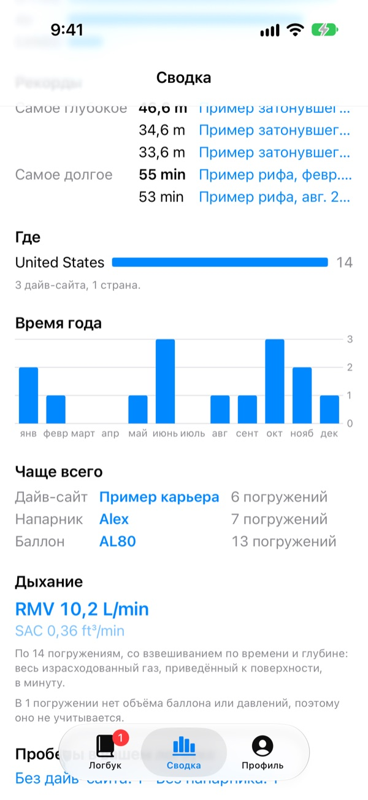

Сначала обновите все устройства
Многие проблемы исчезают, когда на всех устройствах установлена последняя сборка. Откройте TestFlight на каждом iPhone, iPad и Mac, которыми пользуетесь, и установите все обновления. Старая сборка перестаёт отправлять изменения, пока её не обновят, и сообщает: Обновите Thermocline, чтобы продолжить синхронизацию. Ваши изменения сохраняются и отправляются после обновления.
Загрузка с дайв-компьютера
Компьютер не найден
- Разбудите компьютер и переведите его в режим Bluetooth (Shearwater: Menu → Bluetooth). Он остаётся в этом режиме всего около двух минут.
- Держите его рядом с iPhone, iPad или Mac.
- Компьютеры Shearwater возвращаются к последнему устройству, с которым работали. Если рядом ваш телефон или другой Mac, выключите на том устройстве Bluetooth и попробуйте снова.
- Убедитесь, что Bluetooth включён и что Thermocline разрешено его использовать (iPhone: Настройки → Thermocline; Mac: Системные настройки → Конфиденциальность и безопасность → Bluetooth).
Это Predator или Petrel 1, и iPhone его не видит
Они используют старый Bluetooth (Bluetooth Classic), с которым iPhone и iPad работать не могут. Загрузите их на Mac (см. руководство) или импортируйте их погружения из Shearwater Cloud или файла UDDF.
Он подключается, но просит PIN-код
Введите код, показанный на экране компьютера. Он нужен только в первый раз.
«Новых погружений нет»
Загружаются только погружения новее вашей последней загрузки. Если вы удалили погружение и хотите его вернуть, включите Загрузить все погружения с компьютера и загрузите снова. Погружения, которые уже есть в логбуке, пропускаются.
Загрузка остановилась на полпути
Нажмите Сохранить, чтобы сохранить пришедшие погружения, затем загрузите снова остальные. Если загрузка продолжает останавливаться, поднесите устройство ближе к компьютеру, нажмите Повторить и отправьте лог загрузки.
Загрузка по кабелю на Mac не удаётся
- Проверьте, что порт соответствует кабелю: в списке указан тип каждого порта и есть предупреждение, если он не подходит для выбранной модели.
- Отключите и снова подключите кабель, затем нажмите кнопку обновления, чтобы снова поискать кабели.
- Выполните шаги Перед началом для своей модели.
- Загрузка по кабелю — новая функция. Пожалуйста, отправьте лог загрузки в любом случае.
Синхронизация между устройствами
Приложение на iPhone сообщает, что Thermocline теперь одно приложение, или я вижу два приложения Thermocline
18 ноября 2026 г. приложения для iPhone, iPad, Mac и Apple Watch стали одним приложением с одной ссылкой на бету. Прежнее приложение для iPhone теперь только помогает вам перейти.
- Откройте старое приложение. Если оно сообщает, что синхронизация выключена, коснитесь Включить «Синхронизация с iCloud» и оставьте его открытым на минуту или коснитесь Экспортировать логбук в UDDF и сохраните файл.
- Коснитесь Присоединиться к новой бете или откройте ссылку на бету на iPhone и установите новое приложение. Оно встанет рядом со старым.
- В новом приложении включите Профиль → Синхронизация с iCloud. Ваши погружения, дайв-сайты, снаряжение и настройки вернутся. Если вы вместо этого сделали экспорт, используйте Профиль → Импортировать файл логбука.
- Возможно, придётся заново создать пару с дайв-компьютером и снова установить приложение для часов из приложения Watch на iPhone.
- Когда новое приложение покажет те же погружения, удалите старое.
На Mac ничего не меняется: продолжайте обновлять приложение для Mac как обычно.
После синхронизации погружения пропали или задвоились
- Пока ничего не меняйте. Сделайте снимок экрана раздела «Синхронизация» (iPhone: Профиль → Синхронизация; Mac: Thermocline → Настройки → Синхронизация) на каждом устройстве и отправьте его.
- Проверьте, что на всех устройствах последняя сборка.
- Профиль → Ваши данные → Точки восстановления позволяют вернуть логбук к состоянию до импорта, объединения или удаления. Восстановление сначала сохраняет текущий логбук, поэтому его можно отменить.
Изменение на одном устройстве не видно на другом
- Убедитесь, что Синхронизация с iCloud включена на обоих и на обоих выполнен вход в один и тот же Аккаунт Apple.
- Посмотрите Ожидает отправки на устройстве, где вы сделали изменение, и откройте приложение на обоих устройствах при наличии сигнала. Раздел «Синхронизация» сообщает, когда это устройство и ваши другие совпадают.
- Нажмите Синхронизировать сейчас.
«Вход в iCloud не выполнен»
Войдите в iCloud в Настройках устройства. До тех пор ваш логбук остаётся на этом устройстве в сохранности и синхронизируется, как только вы войдёте.
«Хранилище iCloud заполнено»
Ваш логбук в сохранности на устройстве и синхронизируется, когда появится место. Освободите место в iCloud или включите Экономить место в iCloud на фото погружений, чтобы фото не хранились дважды.
«На другом устройстве более новая версия»
Обновите Thermocline на этом устройстве в TestFlight. Ваши изменения здесь в сохранности и отправятся после обновления.
Импорт
Некоторые погружения или данные не перенеслись
Отчёт об импорте перечисляет всё в разделах Не импортировано и Проверьте, с причиной. Каждый логбук записывает UDDF немного по-своему, поэтому отсутствующие значения — это нормально, и они остаются пустыми. Если не хватает того, что вы ожидали, отправьте отчёт и, если можете, файл.
Пропали снаряжение, фото или типы погружений из MacDive
Экспорт MacDive в UDDF их не включает. Импортируйте поверх его XML для снаряжения, тегов и типов погружений, а на Mac импортируйте папку MacDive для фото. Погружения, которые уже есть в логбуке, не добавляются дважды. См. Какой файл MacDive использовать.
У погружений из MacDive нет NDL, ppO₂ или CNS
Страница погружения показывает NDL как «—» и Деко как «Не записано», или для ppO₂ написано «Рассчитано по газу и глубине». Экспорт MacDive в UDDF не включает NDL, ppO₂ и CNS компьютера. В его папке нет профиля для погружений, которые MacDive загрузил на iPhone или iPad, потому что их он хранит в зашифрованном виде.
Импортируйте также XML из MacDive: он заполнит недостающее, не добавляя погружения заново. См. Какой файл MacDive использовать.
Не потеряется ли что-нибудь при переходе между файлами или приложениями?
- Ваши исходные файлы никогда не изменяются. Храните экспорты MacDive и сам MacDive, пока не сравните несколько погружений.
- Повторный импорт добавляет, а не заменяет. Погружения, которые уже есть в логбуке, сопоставляются и получают только то, чего им не хватает, поэтому можно импортировать XML после UDDF или папку после любого из них.
- Можно вернуться. Точка восстановления с названием Перед импортом сохраняется перед любым импортом более одного погружения (Профиль → Ваши данные → Точки восстановления на iPhone, Настройки → Точки восстановления на Mac). На Mac вернуть всё назад также можно с помощью Отменить импорт… в отчёте.
- Уход из Thermocline: его экспорт в UDDF — полный. Он включает NDL, ppO₂ и CNS компьютера по ходу каждого погружения, снаряжение, теги, типы погружений и ссылки на видео. Фото не входят ни в один файл экспорта.
У импортированных погружений нет газа
В файле не было указано, какой газ использовался. Такие погружения ждут в разделе Проверить, чтобы вы могли его указать.
Я импортировал не тот файл
На Mac используйте Отменить импорт… в отчёте об импорте. На любом устройстве точка восстановления с названием Перед импортом сохраняется перед любым импортом более одного погружения.
Файл Garmin не импортируется
- «Это zip-файл»: Экспорт оригинала в Garmin Connect даёт файл .zip. Распакуйте его, затем выберите файл .fit внутри.
- «Это не файл Garmin FIT»: файл не с часов Garmin, или только его имя заканчивается на .fit. Используйте файл из папки GARMIN → Activity на часах или Экспорт оригинала.
- «Файлы Garmin не содержат погружений»: пробежки, прогулки, настройки и файлы о здоровье пропускаются. Переносятся только погружения.
- «Похоже, обрезаны или повреждены»: файл оборвался на полпути, часто из-за незавершённого копирования или загрузки. Показано то, что удалось прочитать; скопируйте файл с часов снова и импортируйте повторно, чтобы получить остальное. Погружения, которые уже есть в логбуке, пропускаются.
- Выбрать файл Garmin вместе с другим файлом логбука за один раз нельзя: импортируйте файл логбука, затем файлы Garmin.
Погружение Garmin просит проверить баллоны
Если трансмиттеров больше одного, файл Garmin не говорит, на каком газе был каждый из них, поэтому они сопоставлены с баллонами погружения по порядку. Откройте раздел газов погружения и убедитесь, что каждое давление относится к правильному баллону.
Время погружения Garmin сдвинуто на час
Время берётся из часов Garmin. Если на них не было установлено местное время места погружения, погружение показывается по времени часов. Измените время погружения или установите часовой пояс часов перед следующей поездкой.
У дрейфового погружения неверный дайв-сайт
Погружение сопоставляется с ближайшим из двух мест — где вы вошли в воду и где всплыли, — а в дрейфе это обычно место входа. Если сопоставлен неверный дайв-сайт или никакой, выберите дайв-сайт в погружении, а другие затонувшие суда, мимо которых вы проплыли, добавьте в заметки.
Расход газа и SAC
Значение SAC выглядит неверным
Коснитесь или нажмите Как? рядом с ним. Там показаны все исходные данные: баллон и его объём по воде, давления, температура, поправка на реальный газ, время и глубина. Обычно виноват неверный объём баллона; исправьте его в снаряжении. Если значение всё ещё выглядит странно, отправьте снимок экрана «Как?».

SAC нет, только сообщение
- Добавьте объём баллона, чтобы увидеть SAC: выберите модель баллона или введите его объём.
- Добавьте начальное и конечное давление, чтобы увидеть SAC: трансмиттера нет, поэтому введите их у баллона.
- Для SAC нужен профиль глубины: у погружений, записанных вручную без профиля, SAC нет.
- Для погружений на ребризере значение SAC не рассчитывается.
SAC учитывает только один баллон
В погружении на нескольких газах давления есть только у баллона с трансмиттером. Введите начальное и конечное давление у другого баллона, и SAC охватит весь газ.
«Дыхание» в сводке сообщает, что ни у одного погружения нет объёма баллона
«Дыхание» усредняет только погружения с объёмом баллона, начальным и конечным давлением. У погружений из UDDF MacDive нет объёма баллона, потому что его объёмы — не объёмы по воде; импорт XML поверх заполняет их (см. Какой файл MacDive использовать). Иначе укажите баллон в своих погружениях (выберите его модель или комплект снаряжения) и добавьте давления, где они у вас есть. Под значением «Дыхание» сообщает, сколько погружений не учтено.

Фото
Фото не отображается на другом моём устройстве
Когда включено Экономить место в iCloud на фото погружений, фото сохраняет свою копию, пока другое ваше устройство не найдёт его в Фото iCloud. Включите настройку на обоих устройствах, проверьте, что Фото iCloud включены на обоих, и дайте время на выгрузку.
Видео не добавились
Видео из медиатеки можно только связать, а не скопировать. Включите Синхронизация → Экономить место в iCloud на фото погружений и убедитесь, что видео находится в Фото iCloud. Или вставьте ссылку YouTube или Vimeo под фото погружения.
«Thermocline не может читать ваши фото»
В доступе к Фото было отказано, поэтому фото копируются, а не связываются. Чтобы связывать их, разрешите доступ в Настройках → Конфиденциальность и безопасность → Фото → Thermocline.
Дайв-сайты и Apple Watch
Предложенный дайв-сайт неверный, или его нет
Выберите другой дайв-сайт, найдите его во встроенных списках по названию или отметьте либо введите координаты сами. Карьеров и озёр внутри материка часто нет в общедоступных списках, поэтому с этого момента ваши собственные дайв-сайты идут первыми в предложениях.
Thermocline нет на моих Apple Watch
Приложение для часов устанавливается вместе с приложением для iPhone из TestFlight. На iPhone откройте приложение Watch, найдите Thermocline в разделе Доступные приложения и коснитесь Установить. Ему нужна watchOS 11 или новее. Если вы перешли со старого приложения для iPhone, установите его снова: старое приложение для часов относится к старому приложению для iPhone.
Часы пишут «Ожидание хорошего фикса», и «Отметить точку» остаётся серой
Точка сохраняется, только если фикс точнее ±30 m и не старше 30 секунд, поэтому неверные координаты никогда не попадают в ваш логбук. Оставайтесь на поверхности, держа часы над водой с открытым видом на небо, и подождите минуту. Старые координаты из кэша не используются означает, что часы ждут свежих. GPS не работает под водой: отметьте точку до погружения или когда всплывёте.
«Доступ к геопозиции для Thermocline выключен» на часах
На часах откройте Настройки → Конфиденциальность и безопасность → Службы геолокации, включите Службы геолокации и разрешите Thermocline доступ при использовании приложения.
Точка, отмеченная на часах, не появилась на iPhone
На часах откройте Отметки. Ждёт отправки на iPhone означает, что iPhone её ещё не получил: держите часы рядом с iPhone и откройте Thermocline на iPhone. Отправлено на iPhone означает, что она там: посмотрите в Логбук → Проверить. iPhone ищет точку, когда он в сети, поэтому без сигнала она ждёт с пометкой ожидание сигнала для поиска.
Часы не показали название дайв-сайта после отметки точки
Название приходит с iPhone: когда он рядом и Thermocline может ответить, часы показывают под точкой дайв-сайт, который он бы предложил, — ваш или из списков дайв-сайтов — и расстояние до него. Если iPhone вне досягаемости, часы называют ваши собственные дайв-сайты по копии, которую оставил на них iPhone, но не дайв-сайты из списков. Если в пределах примерно 1,5 km нет ни одного дайв-сайта, точка отмечается без названия. В любом случае дайв-сайт вы выбираете на iPhone, в Логбук → Проверить.
Название, которое я продиктовал на часах, не сохранилось
Название сохраняется, когда закрывается диктовка или клавиатура или когда вы возвращаетесь назад. Откройте Отметки, коснитесь точки и проверьте её название; коснитесь Изменить название, чтобы попробовать снова. Если точка уже отправлена, название последует за ней на iPhone.
Записывают ли часы мои погружения?
Нет. Приложение Thermocline для часов только отмечает точки на поверхности. Ваши погружения поступают с дайв-компьютера. Для часов Garmin Descent импортируйте их файлы .fit: см. Garmin Descent в руководстве.
Точка исчезла с часов
Так и должно быть. Точка удаляется с часов, когда её подтвердят или отклонят на iPhone. Подтверждённая точка — это дайв-сайт в вашем логбуке, и она синхронизируется с другими вашими устройствами.
Отправить отчёт или лог загрузки
- Из приложения: сделайте снимок экрана, затем используйте Поделиться отзывом о бете в TestFlight. Он приходит с приложенными данными о сборке и устройстве.
- Лог загрузки, iPhone: на экране загрузки коснитесь Лог загрузки, затем поделитесь им. В нём только сообщения Bluetooth и компьютера, без данных погружений.
- Лог загрузки, Mac: в окне загрузки выберите Лог загрузки…, затем Сохранить лог… и приложите файл.
- Эл. почта: brian@616labs.net, укажите своё устройство, номер сборки (показан в TestFlight) и что вы ожидали.